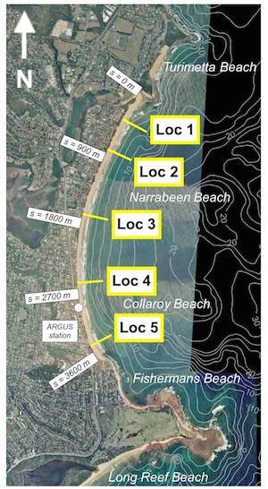

Lab 4: Advanced Wrangling with Pandas¶
Tomas Beuzen, September 2020
In this lab, you’ll complete various wrangling exercises using Pandas. I’ll also be teaching you a little coastal science along the way!
Table of Contents
import re
import requests
import numpy as np
import pandas as pd
import matplotlib.pyplot as plt
plt.style.use('ggplot')
plt.rcParams.update({'font.size': 16,
'axes.labelweight': 'bold',
'figure.figsize': (10, 7)})
Exercise 1: Dirty Gapminder¶
rubric={autograde:4}
In Lab 3 you performed some basic Pandas operations on the Gapminder dataset. However, this dataset was given to you clean and shiny and ready-to-go. In the real world, that’s rarely the case, and in this exercise you’ll have to clean up a “dirty” version of the Gapminder dataset. For your interest, here is an article on why data cleaning is important and how extremely frustrating it can be.
Your goal is to load in “dirty gapminder” as a dataframe called dirty and “clean gapminder” as a dataframe called clean, and wrangle dirty until it is the same as clean:
Dirty gapminder: https://raw.githubusercontent.com/STAT545-UBC/STAT545-UBC.github.io/master/gapminderDataFiveYear_dirty.txt
Clean gapminder: https://raw.githubusercontent.com/STAT545-UBC/STAT545-UBC.github.io/master/gapminderDataFiveYear.txt
A test has been provided to check that dirty is the same as clean. Things you might want to do to clean up dirty:
Check that
dirtyandcleanhave the same columns;Check if there is any missing data, if there is missing data (NaNs or empty strings) fill them with sensible values;
Check for things like capitalization, spelling, grammar, etc;
there may be entries that appear to have the exact same spelling and capitalization in both
dirtyandclean, but still don’t match… Extra whitespace is often a frustrating (and invisible) problem when wrangling text data. You can useSeries.str.strip()to trim any additional unwanted whitespace around a string.At any time, you can check which rows in
dirtyare not equal tocleanusing something like:dirty[dirty.ne(clean).any(axis=1)].
url_dirty = 'https://raw.githubusercontent.com/STAT545-UBC/STAT545-UBC.github.io/master/gapminderDataFiveYear_dirty.txt'
url_clean = 'https://raw.githubusercontent.com/STAT545-UBC/STAT545-UBC.github.io/master/gapminderDataFiveYear.txt'
dirty = None
clean = None
# Your answer goes here.
Exercise 2: Getting Sandy with Pandas¶
rubric={autograde:4}
During my undergrad and PhD I led a beach survey program of one of the local beaches in Sydney, Australia called Narrabeen Beach. The survey program started in the 1970’s and has continued to the present day. All the data is available at a website hosted by the lab I did my PhD at: http://narrabeen.wrl.unsw.edu.au/explore_data/time_series/. In the next few exercises we’re going to download, wrangle, and explore this dataset.
The survey program aimed to measure the width of the beach every few weeks. There were five locations that we would measure along the beach, from location 1 at the north end of the beach, to location 5 at the south end:

Below I’ve provided you with a function get_beach_data() that “scrapes” the http://narrabeen.wrl.unsw.edu.au website’s data using the requests library (you’ll learn more about web scraping in DSCI 525). The function returns a list of tuples containing the date of a survey and the width of the beach on that date, for the given survey_location (1, 2, 3, 4, or 5), e.g.:
get_beach_data(survey_location=1)
[('1976-04-27', '78.5'),
('1976-05-10', '65.1'),
('1976-05-18', '72.9'),
('1976-05-25', '76.0'),
('1976-06-02', '83.4'),
('1976-06-16', '67.7'),
('1976-06-18', '74.5'),
('1976-06-23', '78.2'),
...
Your Tasks
Extract the data for each survey location (1, 2, 3, 4, 5) and store them in five separate Series with the Index of the Series being the datetime (hint: you’ll need to convert the string dates to datetimes with
pd.to_datetime().Merge all of the Series together in a single dataframe. Note that the Series are not all the same length (sometimes I forgot to measure a certain location 😁), so we want to do an “inner” join on the index values between all the Series here (hint:
df.merge()would work just fine here, but when we want to join more than two series with a simple “inner” join on the indexes,pd.concat()might be your friend… check out the docstring). Your final dataframe should be calledbeach_dfand should look like this (note that the datetimes have been set as the index):
location_1 |
location_2 |
location_3 |
location_4 |
location_5 |
|
|---|---|---|---|---|---|
1976-04-27 |
78.5 |
59.7 |
44.7 |
16.2 |
63.5 |
1976-05-10 |
65.1 |
60.7 |
61.6 |
15.0 |
65.8 |
1976-05-18 |
72.9 |
67.0 |
68.6 |
23.8 |
64.3 |
1976-05-25 |
76.0 |
70.3 |
67.6 |
21.8 |
44.5 |
1976-06-02 |
83.4 |
79.5 |
79.8 |
24.5 |
57.1 |
The next few questions of this lab rely on this dataframe so make sure you pass the autograder before proceeding. If you are unable to pass the autograder, I’ve saved a version of the dataframe in the data folder of this directory. When you get to Exercise 3, you may just read that in with
pd.read_csv('data/beach_data.csv', index_col=0, parse_dates=True).
def get_beach_data(survey_location):
if survey_location not in range(1, 6):
raise ValueError("survey_location should be an integer 1, 2, 3, 4, or 5.")
url = "http://narrabeen.wrl.unsw.edu.au/explore_data/time_series/"
with requests.session() as s:
cookies = dict(s.get(url).cookies.items())
data = {
"csrfmiddlewaretoken": cookies["csrftoken"],
"profile": str(survey_location),
"startDate": "27/04/1976",
"endDate": "26/08/2020",
"datatype": "WIDTH",
}
response = s.post(url, cookies=cookies, data=data, verify=False)
return re.findall(r'new Date\("(.*)"\)\.getTime\(\), (\d+.\d)', response.text)
beach_df = None
# Your answer goes here.
Exercise 3: Life’s a Beach¶
rubric={accuracy:4,efficiency:2}
In Exercise 2 you may have noticed that the frequency of the data you just collected is on the order of a few days to a few weeks (it’s irregularly spaced). This can make it difficult to extract patterns from the data. One way to deal with this is to aggregating our time series to a regular interval (e.g., from irregular daily data -> monthly data). That’s what we’ll be doing in this question.
If you were unable to wrangle the data and pass the autograder in Exercise 2, I’ve saved a version of the
beach_dfin the data folder of this directory which you may read in withpd.read_csv('data/beach_data.csv', index_col=0)to answer this question.
Your Tasks
First “de-mean” each column by subtracting the mean of each column from the column - this will help us see if a location on the beach is narrower (negative numbers) or wider (positive numbers) than the average at a certain time.
Resample
beach_dffrom the previous question to a monthly interval with the mean as the aggregation function (hint:.resample()) and change the index of the dataframe to a PandasPeriodIndex(hint: take a look at the arguments of.resample()…). Finally, remove all entries prior to 1980 (the accuracy of these measurements was not great!) (hint: remember we can very easily index datetimes with partial string matching).Finally, melt the dataframe into tidy format, your final
beach_dfshould look something like this:
location |
width |
|
|---|---|---|
1980-01 |
location_1 |
4.356982 |
1980-02 |
location_1 |
3.856982 |
1980-03 |
location_1 |
0.156982 |
1980-04 |
location_1 |
4.856982 |
1980-05 |
location_1 |
-14.343018 |
… |
… |
… |
2019-07 |
location_5 |
-7.042108 |
2019-08 |
location_5 |
-6.225441 |
2019-09 |
location_5 |
-14.425441 |
2019-10 |
location_5 |
-15.125441 |
2019-11 |
location_5 |
-15.542108 |
beach_df = None
# Your answer goes here.
Exercise 4: Time for Some Science¶
Nice job! In the last few exercises you wrangled a messy dataset into a nice tidy format! In this exercise you’ll get to explore this dataset and I’ll teach you some coastal science along the way. You can use any of the techniques you’ve learned to answer these exercises.
4.1¶
rubric={accuracy:1}
Which survey location (1, 2, 3, 4, or 5) has the greatest variability in measured beach widths? (You may leave your answer as the output of a dataframe operation, you don’t have to write “location X”).
Science: Waves are a key factor that shape beaches. Large waves erode (narrow) beaches and small wave accrete (widen) beaches. Waves hitting the southeast coast of Australia predominantly come from the south, meaning that it’s usually the northern end of beaches on this coastline that are most affected by waves, i.e., have the most variability.
# Your answer goes here.
4.2¶
rubric={accuracy:1}
Which survey location (1, 2, 3, 4, or 5) experienced the greatest erosion in the time series (i.e., the largest negative number)? (You may leave your answer as the output of a dataframe operation, you don’t have to write “location X”)
Science: sometimes the southeast Australian coast gets hit by tropical cyclones which come directly from the east and generate huge waves. As a result, sections of beaches that are east-facing typically experience the greatest erosion.
# Your answer goes here.
4.3¶
rubric={accuracy:1}
Of the four seasons (summer, autumn, spring, winter), which season is the beach, on average, the narrowest? Remember that the seasons in Australia are opposite to Canada, e.g., December-February is summer and June-August is winter (hint: decompose the datetime index to create a “month” column and use .groupby()). (You may leave your answer as the output of a dataframe operation, you don’t have to write “season X”).
Science: the southeast coast of Australia experiences larger waves in the cooler winter months. That’s because, in winter, very cold air flows north from Antarctica and reacts with warmer air travelling south from the equator, generating large low-pressure (storm) systems that create big waves.
# Your answer goes here.
4.4¶
rubric={accuracy:1}
Calculate the correlation between beach width observations at location 1 and location 5.
Science: one cool thing about embayed beaches like Narrabeen is that the amount of sand in the system is typically conserved. That means that if one part of the beach is getting narrower, another section is probably getting wider. This is most obvious at the extremes of the beach, location 1 and location 5 in our case. We can confirm this by calculating the correlation between observations of these two locations (it should be negative, which means that if one location is eroding/accreting, the other location is doing the opposite). (hint: there is a dataframe method that calculates correlation between columns).
# Your answer goes here.
4.5¶
rubric={accuracy:1}
Perform a double “groupby” operation (group on two columns) to determine for which month and location the beach is on average the widest.
Science: this is a really interesting question! In the previous questions we learned that the northern-most beach location (location 1) is the most exposed to waves, that the biggest waves occur in winter, but that if one part of the beach is eroding (becoming narrower), then the opposite end is probably accreting (getting wider). So, we’d expect the answer here to be around the middle of the year (winter-ish time) and location 5 (opposite end of the beach to location 1).
# Your answer goes here.
4.6¶
rubric={accuracy:1}
For how many months in our monthly, resampled time series spanning 1980 - 2019 is at least one observation for a location missing?
Science: No science here. Collecting field data is time-consuming work - luckily new technologies like satellite data, LIDAR, and cameras will make monitoring beaches much more reliable and consistent in the future.
# Your answer goes here.
(OPTIONAL) Exercise 5: Plotting¶
rubric={accuracy:1}
In Exercise 4 we just learned that at Narrabeen Beach, there is a “rotation effect” where if one end of the beach is getting narrower, often the other end is getting wider, and that this is most obvious at the extremes of the beach, location 1 and location 5. Your task here is to get visual confirmation of that rotation phenomenon by plotting the time series of observations for location 1 and location 5 on the same plot (hint: you should drop the NaN values in the time series before plotting).
# Your answer goes here.